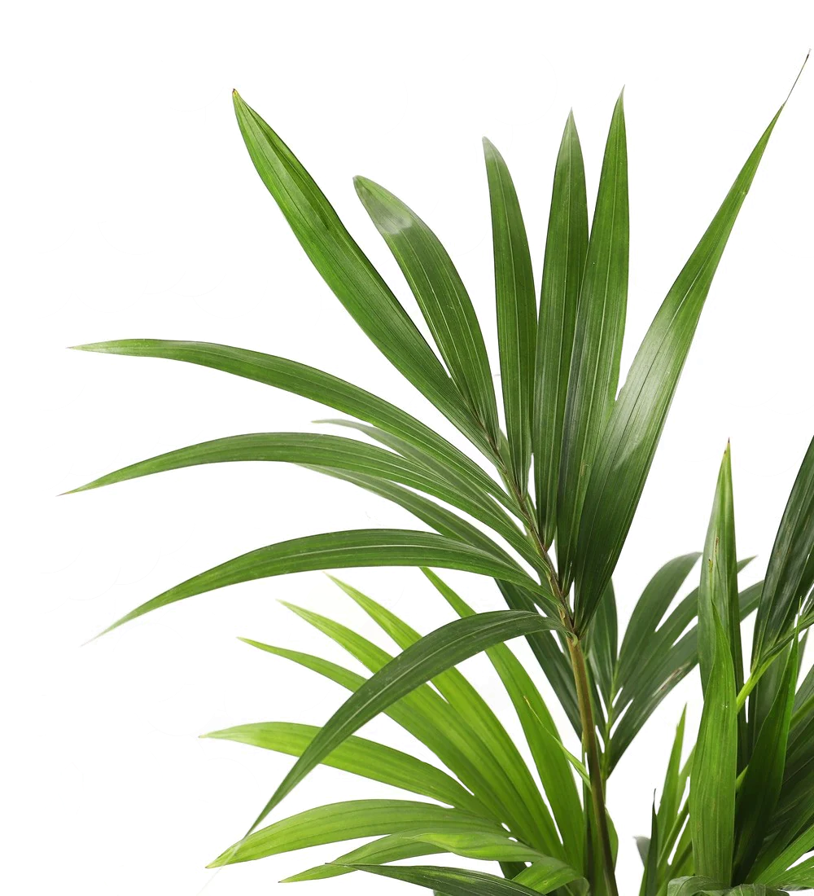
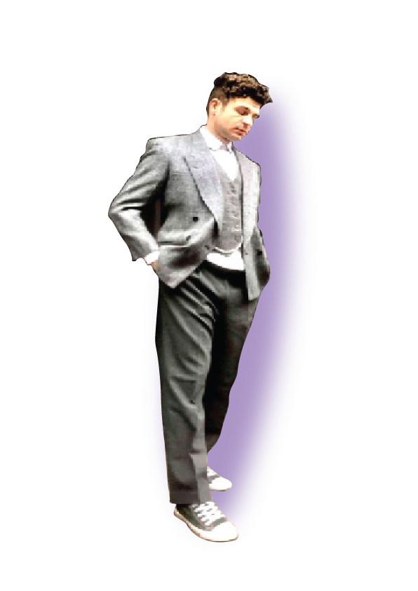
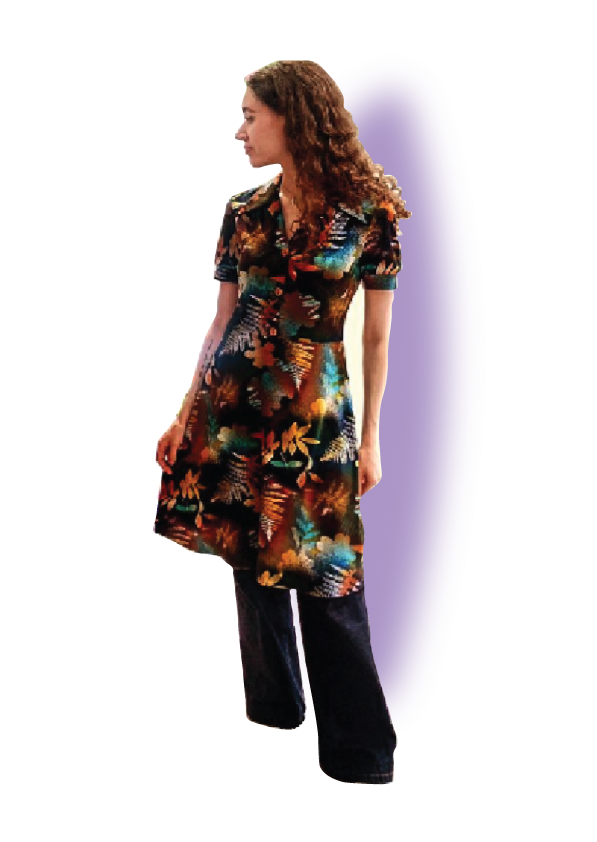

ÅRTIER



Tag en tidsrejse gennem modehistorien i vores inpirationskategori!
Her finder du inspiration fra 1920'ernes art deco-stil til 2000'ernes glamour.
Udforsk tøj som var det taget ud af 20’erne,, skræddersyede kjoler i 50'er stil, bohemevibes fra 70'erne, neonfarver fra 80'erne, grunge fra 90'erne og glitrende tøj fra 00'erne.
Vores kategori opdateres løbende, så du altid kan finde nye retrolooks.